Based on the size and quality of the camera lens, the center of an image may
appear brighter than the corner regions. Lens shading correction (LSC) corrects
brightness attenuation and tint (uneven color shading).
Figure : (L) Original; (R) Corrected
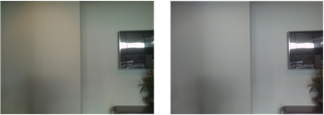
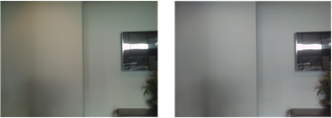
Tint usually results from using an infrared (IR) filter when capturing images.
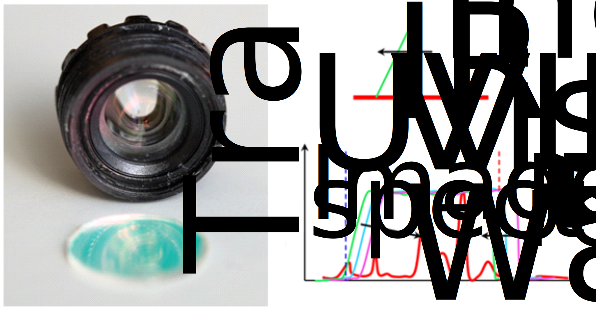
Sensor module variation, lens material and lighting conditions could also cause
tint.
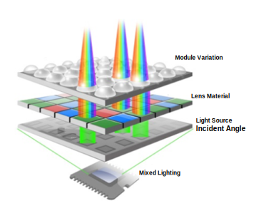
The following figure illustrates where color shading is corrected in the VFE.
The main steps in the process are:
- Values from the reference table are applied and residual stats are obtained.
- Color tint (shading) is estimated based on the residual stats.
- The inverse value of color tint is multiplied by the reference table value
to obtain the corrected value.
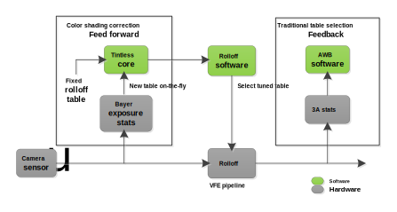
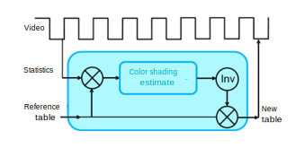
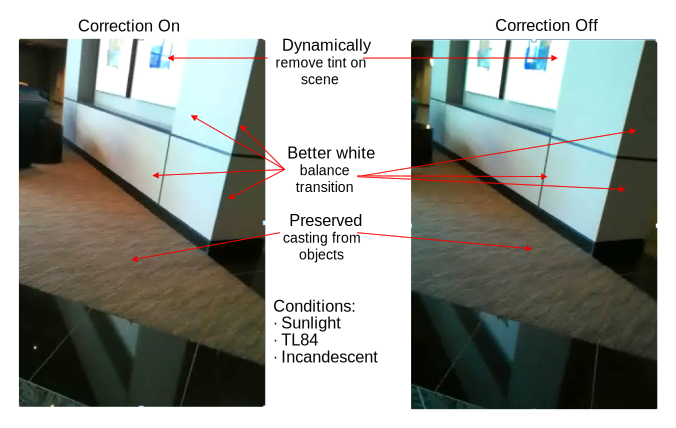
The conventional method of using AWB along with multiple calibration tables
cannot compensate for individual module variation, uncalibrated or different
illuminants, etc. Dynamic color shading correction estimates color shading from the BE
stats and continuously updates the reference table. It provides a more robust solution
and reduces the calculation burden by using a single calibration table.
Figure : (L) Conventional method (AWB + multitable); (R) Dynamic color shading
correction (tintless)
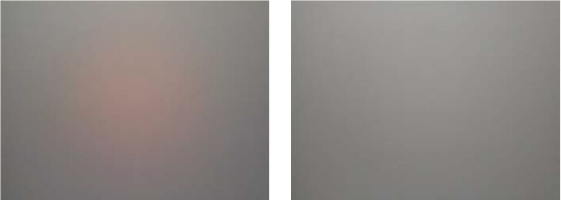
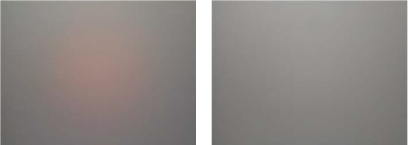
LSC is applied to Bayer raw images to reduce the computation load. Instead of modeling the curve and performing polynomial calculations, a linear piecewise approximation with the help of LUTs is used. Each color has its own LUT, so the brightness attenuation and color shift problems can be solved simultaneously.

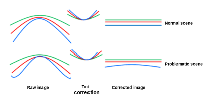
Examples of lens shading correction
Figure : (L) Tintless off, indoor. (R) Tintless on, indoor
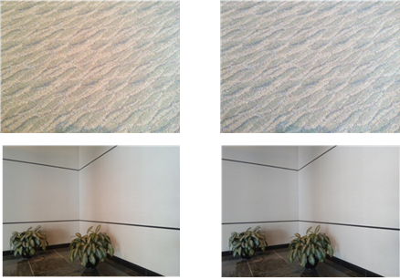
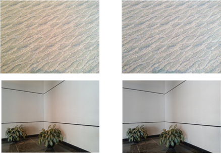
Figure : (L) Tintless off, mixed light. (R) Tintless on, mixed light
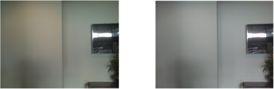
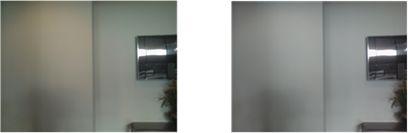
Figure : (L) Tintless off, lightbooth; (R) Tintless on, lightbooth
The following figure illustrate the same image using a commercial solution
(left) compared to tintless.
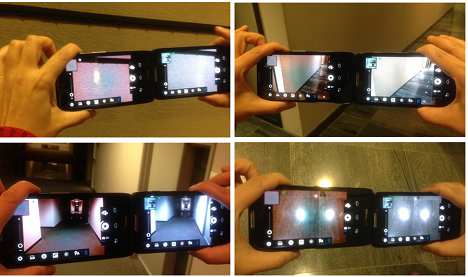